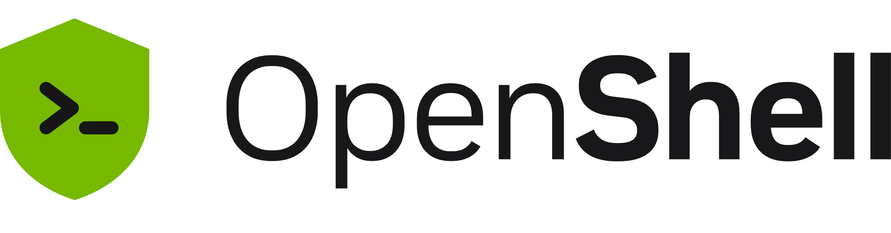

OpenShell
A safety sandbox from NVIDIA that keeps AI agents from doing damage - they run inside a locked room with a one-way mirror.
When an AI agent needs to run code or touch a system, OpenShell puts it inside an isolated container with strict rules about what it can access, what it can change, and who has to approve before it acts.

How does it work?
AI agents are powerful, but letting them run code on your systems is risky. A rogue command, a prompt injection, or a simple mistake can delete files, expose data, or break a production system.
An AI agent told to 'clean up old files' deletes your database backups. Or a prompt injection makes it email your credentials to an attacker.
You install OpenShell and configure it as the safety layer your AI agents run through.
curl -LsSf https://raw.githubusercontent.com/NVIDIA/OpenShell/main/install.sh | sh - one command to install on Linux or Mac.
Your AI agent's actions - code execution, file access, network calls, system commands.
The agent wants to run a Python script, read a config file, or make an API call. Each action goes through OpenShell first.
It wraps each agent action in a sandboxed container with permission rules, approval gates, and an audit log.
- The agent's code runs inside an isolated container - it can't see or touch your real system
- A supervisor checks each action against permission rules: is this agent allowed to read this file? Run this command? Access this network?
- High-risk actions require human approval before they execute. Everything is logged for audit.
SAP engineers are integrating OpenShell into their Joule Studio platform, contributing code in 4 areas: platform architecture, Kubernetes operations, gateway footprint, and supervisor health monitoring.
AI agents that can do their work without being able to do damage.
- Sandboxed executionAgent code runs in containers that can't access your real filesystem, network or databases unless explicitly allowed
- Permission gatesRules that say what each agent can and can't do - file by file, command by command, network endpoint by endpoint
- Audit trailA complete log of every action the agent took, every permission check, and every approval or denial
What changes for me?
Without it
- Letting AI agents run code means trusting them not to break things. Custom container sandboxing (isolating code in a sealed-off virtual environment) is possible but hard to get right.
- When something goes wrong, there's no audit trail - you don't know what the agent did or why.
With it
- Agents run inside locked-down containers with explicit permission rules. They can do their job but nothing more.
- Every action is logged and auditable. High-risk actions need human approval before they execute.
How hard is it to try?
Effort
- Install OpenShell:
curl -LsSf https://raw.githubusercontent.com/NVIDIA/OpenShell/main/install.sh | sh(Linux or Mac with Docker/Podman). - Create a sandbox, point an AI agent at it, and ask the agent to run a command. Watch the permission check in the logs.
- Try a restricted action (file deletion, network access) and see whether the sandbox blocks it.
What it takes on your computer
- Space on disk
- 71 MB (Debian amd64 package) to 44 MB (Snap amd64). Compressed sandbox archive: 4.2 MB.
- Memory while it runs
- No data found for exact memory usage. Runs containers, so memory depends on what the agent does inside them.
- Runs on
- Linux, macOS (Apple Silicon), Windows with WSL 2 (experimental). Requires Docker or Podman. GPU optional - needed only if running inference inside sandboxes.
Paste this into Claude Code. It runs your safety scan first, then a 10-minute test.
/skillspector https://github.com/NVIDIA/OpenShell If that scan passes: install OpenShell, create a sandbox, and test 3 scenarios: a safe command, a dangerous command (file deletion), and a network call. Report whether the sandbox blocks the right things and logs everything. 15 minutes max.
Should I?
Great if you...
- You're deploying AI agents that run code in production and need a safety layer between the agent and your systems
- You need an audit trail of every action an AI agent takes, for compliance or debugging
Skip it if...
- You're experimenting with AI agents locally and don't need production-grade sandboxing
- You need fleet-level governance (managing hundreds of agent instances across teams) - OpenShell handles individual agents, not fleet management
Instead, you could look at
- E2B (e2b.dev)Cloud sandboxes for AI agents, with a simpler API. Easier to start with but less configurable, and your agent's code runs on their servers.
- Custom Docker sandboxingBuild your own with Docker seccomp profiles and network policies. Full control, but you're building and maintaining the permission system yourself.
Is it safe?
- Security advisories: 0GitHub's advisory list, checked Oct 2
- Searches for CVEs, vulnerabilities, malware and scams18 results read, including the national CVE database: nothing unresolved
- Are the stars earned?14.2K stars, 130 contributors, 1.6K commits
Watch out for
- Alpha software (v0.1.2). Four days old as open source. Expect breaking changes, missing features, and rough documentation.
- NVIDIA-backed, not community-driven. This is a corporate open-source project. NVIDIA controls the roadmap, and enterprise needs come first.
- Fleet governance is out of scope. Tigera's review notes that OpenShell secures individual agents but can't answer 'what are all my agents doing right now?' across a fleet.
- Skeptics question the premise. The HN discussion (385 points, 261 comments) includes debate about whether sandboxing solves the core problem of AI agent safety, or just moves the trust boundary.
Who's using it, and for what?
OpenShell is backed by NVIDIA with enterprise partnerships. Named integrations include SAP (contributing engineers) and Salesforce/Slack (reference architecture). These are partnerships, not confirmed production deployments with measurable results.
SAP (Andre Lamego, SVP & Chief Product Officer)
SAP engineers are contributing code to OpenShell in 4 areas: platform architecture, Kubernetes-native operations, gateway footprint, and supervisor health monitoring. Integrating into Joule Studio on SAP Business Technology Platform.
Salesforce + Slack
Building a reference architecture where Slack is the conversational layer for Agentforce agents, with OpenShell for managing agent activity, viewing audit events, and approving/rejecting agent permission requests from within Slack.
Who's talking about it
- Hacker NewsNvidia NemoClaw (covers OpenShell runtime)
- Morning BrewHas Nvidia solved the rogue AI hacking problem?
- The New StackNvidia launches Open Agent Safety Platform to lock down rogue AI agents
- CNBCNvidia Open Agent Safety Platform to stop AI agents from breaking out
- Tigera BlogNVIDIA OpenShell Secures the Agent. Who Governs the Fleet?
Sources
- OpenShell on GitHub (README, architecture, install), Oct 2
- NVIDIA OpenShell docs, Oct 2
- SAP: OpenShell for enterprise AI agents, Sep 28
- HN: Nvidia NemoClaw / OpenShell discussion, Oct 2
- Morning Brew: Nvidia rogue AI hacking, Sep 29
- Tigera: OpenShell fleet governance gap, Jul 15
- The New Stack: OpenShell launch, Sep 28